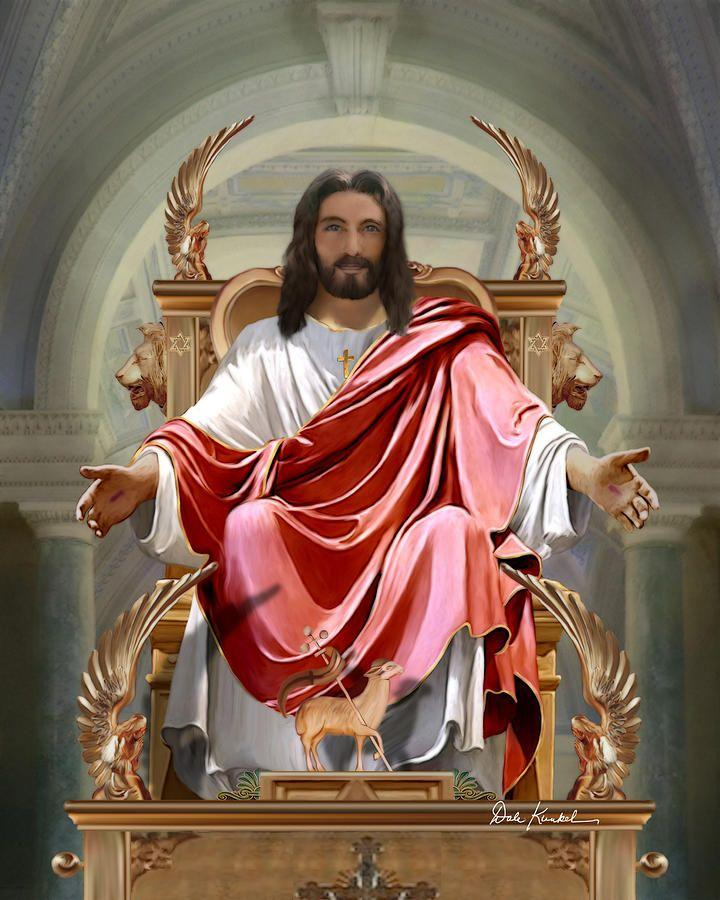

Psalm 29: Lessons for God’s Enemies Regarding the Worship That He is Owed
Introduction: While many of the Psalms are directed to God, Psalm 29 contains David’s warning to God’s enemies. He speaks to what are presumed to be angelic beings who opposed God and witnessed the judgment that God unleashed in the flood (Ps. 29:1, 10). But his message applies to anyone who rebels against God. Any enemy of God is warned that God is owed: (1) praise, (2) reverence, (3) submission, (4) humility, (5) obedience, (6) confession, and (7) gratitude.
First, David exhorted the angelic enemies of God to recognize the power of His judgment and praise His righteous glory. Without Jesus, you were also once an “enemy” of God in need of mercy. Thus, you too should praise God for His mercy and His righteous glory. Second, David further urged God’s enemies to give God the reverence that He is owed. Even when you are reconciled to God the Father through Jesus, God is still entitled to your reverent worship. Third, David further urged God’s enemies to submit before His incredible power. Many recognize God’s power but still struggle in submitting to Him. You can show Your praise for God by submitting before Him. Fourth, David also urged God’s enemies to humble themselves before Him. You can also show your praise for God by being humble before Him. Fifth, David warned God’s enemies that God is sovereign over every aspect of nature and that they should obey Him the same way that nature does. You should also show your praise for God through your obedience. Sixth, David reminded God’s enemies that God was King over the flood, and that He will reign forever. One day, every person will confess Jesus as Lord. You can show your praise for Him by confessing Him as Your Lord over every aspect of your life. Finally, David promised God’s blessing for those who repented and returned to God. This was also a reason for God’s people to praise Him. You can also show your praise for God through gratitude to Him.
1. Praise: Praise God for His Mercy and His Righteous Glory. Ps. 29:1.
David urged God’s enemies to praise Him. David warned the angelic beings who opposed God before the flood to give Him the glory that He deserves: “A Psalm of David. 1 Ascribe to the Lord, sons of the mighty, ascribe to the Lord glory and strength.” (Ps. 29:1). The term “sons of the mighty” (also translated “sons of God”) refers to angelic beings who rebelled against God before the flood Gen 6:2 (1 Pet 3:19-20; Jude 1:6). “The term ‘flood’ (שיטפון) occurs thirteen times in the Old Testament. Twelve of the occurrences are in Gen 6-11, all referring to Noah’s flood, and the thirteenth is in Ps 29:10. . . In Ps 29:1-2, David calls the powers who transgressed in Gen 6:2 to repent and worship Yahweh, implicitly calling all who rebel against Yahweh to repent and worship as well.” (James M. Hamilton Jr., Evangelical Bible Theology Commentary Psalms (Vol. I: Psalms 1-72) (Lexham Academic 2021) p. 341-2). “Neither men nor angels can confer anything upon Jehovah, but they should recognize his glory and might, and ascribe it to him in their songs and in their hearts.” (Charles Spurgeon on Ps. 29).1

Image credit2
You too were once an enemy of God. Without what Jesus offers, you were also once an “enemy” of God: “For if while we were enemies we were reconciled to God through the death of His Son, much more, having been reconciled, we shall be saved by His life.” (Ro. 5:10). But you can praise Jesus because He provided a path to reconcile you with God the Father: “who is the one who condemns? Christ Jesus is He who died, but rather, was raised, who is at the right hand of God, who also intercedes for us.” (Ro. 8:34).
Sin cannot be in God’s holy presence. Sin cannot be in God’s presence because “our God is a consuming fire.” (Heb. 12:29). Thus, God judged the angels who rebelled against Him: “He sent His burning anger upon them, fury and indignation and trouble, a band of destroying angels.” (Ps. 78:49). “And in the greatness of Your excellence You overthrow those who rise up against You; You send out Your burning anger, and it consumes them like chaff.” (Ex. 15:7). Thus, everyone is in need of God’s mercy.
Praise God for His mercy and glory. As our example, David began the celebration of the return of the ark and the promise of the return of God’s glory with a similar praise: “28 Ascribe to the Lord, O families of the peoples, ascribe to the Lord glory and strength.” (1 Chr. 16:28). Other psalms also contain similar praises: “Ascribe strength to God; His majesty is over Israel, and His strength is in the skies.” (Ps. 68:34). “Ascribe to the LORD, you families of the peoples, ascribe to the LORD glory and strength.” (Ps. 96:7). “Bless the LORD, my soul! LORD my God, You are very great; You are clothed with splendor and majesty,” (Ps. 104:1). Because you have been saved by Jesus’ atoning death from judgment, you should praise Him for His mercy and glory.
2. Reverence: Show Your Praise For God Through Reverent Worship. Ps. 29:2.
David urged those who rebelled against God to show Him reverence. In addition to giving God praise, David warned God’s enemies that God is owed proper reverence: “2 Ascribe to the Lord the glory due His name; worship the Lord in holy attire.” (Ps. 29:2). David stresses first the glory due God’s “name” and then the proper response.
Bless God’s Holy name. David ascribed glory “due His name” (Ps. 29:2). This referenced God’s holy character, not just the way you identify Him. He deserves worship that is undivided: “I am the LORD, that is My name; I will not give My glory to another, nor My praise to idols.” (Is. 42:8). To worship for God’s holiness, the psalmist regularly blessed God’s holy name: “And blessed be His glorious name forever; and may the whole earth be filled with His glory. Amen, and Amen.” (Ps. 72:19). “Ascribe to the LORD the glory of His name; bring an offering and come into His courts.” (Ps. 96:8). “Not to us, O LORD, not to us, but to Your name give glory because of Your lovingkindness, because of Your truth.” (Ps. 115:1). “that Your name may be magnified forever,” (2 Sam. 7:26). “bless the Lord your God forever and ever! May Your glorious name be blessed and exalted above all blessing and praise!” (Neh. 9:5). Jesus also began the Lord’s prayer by declaring God’s name to be holy (Matt. 6:9). Do your prayers and worship also include expressions of awe and praises for God’s holy name?
God’s holiness clothes Him with majesty. God’s holiness also includes beauty that is nothing like anything you have ever seen: “The LORD reigns, He is clothed with majesty; the LORD has clothed and encircled Himself with strength. Indeed, the world is firmly established; it will not be moved.” (Ps. 93:1). “The idea is that man should bow in humble recognition of the greatness, the beauty, and the surpassing holiness of God . . . There are four Biblical passages presenting the idea of the beauty of holiness (1 Chronicles 16:29, 2 Chronicles 20:21, Psalm 29:2, and Psalm 96:9), and each of them associates worship or praise with the concept. Perceiving the beauty of holiness should compel us to true worship and praise. God’s holiness – His “set-apart-ness” – has a wonderful and distinct beauty about it. It is beautiful that God is God and not man; He is more than the greatest man or a superman. His holy love, grace, justice, and majesty are beautiful.” (David Guzik on Ps. 29) (emphasis original).3
Show God reverent respect in your worship. David also told the Jews to “worship the Lord in holy attire.” (Ps. 29:2). In the similar tribute to God upon the return of the ark, David also told the Jews “29 Ascribe to the Lord the glory due His name; bring an offering, and come before Him; worship the Lord in holy array.” (1 Chr. 16:29). He then told the Jews “Tremble before Him” (1 Chr. 16:30). Jehoshaphat gave a similar instruction for the Jews to worship in holy attire: “When he had consulted with the people, he appointed those who sang to the LORD and those who praised Him in holy attire, . . .” (2 Chr. 20:21a). Other psalms contain similar directions for worship: “Worship the LORD in holy attire; tremble before Him, all the earth.” (Ps. 96:9). “Come, let’s worship and bow down, let’s kneel before the LORD our Maker.” (Ps. 95:6). These verses stress an important point that is frequently forgotten in the modern Church; believers should approach God with reverence and respect in their worship.
3. Submission: Show Your Praise for God by Submitting Before Him. Ps. 29:3-4.
David urged those who rebelled against God to submit to His power. David further exhorted God’s enemies to submit to His power: “3 The voice of the Lord is on the waters; the God of glory thunders, the Lord is over many waters. 4 The voice of the Lord is powerful, the voice of the Lord is majestic.” (Ps. 29:3-4). “Yahweh’s voice brought all into being as He spoke the world into existence (cf. Gen 1:1-2, 6-8), and Yahweh’s voice summoned the flood (cf. Gen 7:4). Yahweh’s voice should be obeyed.” (Hamilton p. 343). The angelic enemies of God knew His power but still struggled to submit to God. Today, many are not reconciled with God because they refuse to submit.
Image credit4
God’s voice carries power like thunder. The psalmist associated God’s name with power: “To Him who rides upon the highest heavens, which are from ancient times; behold, He speaks with His voice, a mighty voice.” (Ps. 68:33). Throughout the Bible, God’s voice was also analogized to the power of thunder. Moses used similar terms to describe God’s mighty power when He appeared at Mount Horeb/Sinai: “Moses spoke and God answered him with thunder.” (Ex. 19:19b). In David’s song of deliverance, he stated: “The LORD thundered from heaven, and the Most High uttered His voice.” (2 Sam. 22:14). Before God appeared to Job in thunderous storm clouds, Elihu declared his reverent fear at the approaching presence of God: “At this also my heart trembles, and leaps from its place. 2 Listen closely to the thunder of His voice, and the rumbling that goes out from His mouth. 3 Under the whole heaven He lets it loose, and His lightning travels to the ends of the earth. 4 After it, a voice roars; He thunders with His majestic voice, and He does not restrain the lightning when His voice is heard.” (Job 37:1-4). Hannah also declared in her prayer: “Those who contend with the LORD will be terrified; against them He will thunder in the heavens, the LORD will judge the ends of the earth; and He will give strength to His king, and will exalt the horn of His anointed.” (1 Sam. 2:10). Jeremiah also declared: “When He utters His voice, there is a roar of waters in the heavens, and He makes the clouds ascend from the end of the earth. He makes lightning for the rain and brings out wind from His storehouses.” (Jer. 51:16). The judge Deborah also used similar words in her song of deliverance to describe God: “LORD, when You went out from Seir, when You marched from the field of Edom, the earth quaked, the heavens also dripped, even the clouds dripped water. The mountains quaked at the presence of the LORD, this Sinai, at the presence of the LORD, the God of Israel.” (Jdgs. 5:4-5). “Mountains quake because of Him and the hills dissolve; indeed the earth is upheaved by His presence, the world and all the inhabitants in it.” (Nahum 1:5; Is. 64:1; Hab. 3:3-15). These persons all stood in reverent awe of God’s majesty.
Praise God for using His power to protect you: God also deserves your praise because He uses His power to protect you: “Now Samuel was offering up the burnt offering, and the Philistines drew near to battle against Israel. But the LORD thundered with a great thunder on that day against the Philistines and confused them, so that they were routed before Israel.” (1 Sam. 7:10). God therefore deserves your reverent worship.
Praise God for using His power to cause all things to work together for good. Whenever you face a trial or a hardship, you can praise God because He is in control and causes all things to fulfill a greater plan: “And we know that God causes all things to work together for good to those who love God, to those who are called according to His purpose.” (Ro. 8:28). When the reasons for a trial are unknown, do you still praise God?
Submit to God with awe and wonder. Moses also referred to God as awe inspiring or “awesome”: “You shall not dread them, for the LORD your God is in your midst, a great and awesome God.” (Dt. 7:21). The word “awesome” in Hebrew is literally translated as “He is the one to be feared.” The psalmists also referred to God as being awesome: in glory, power, and majesty: “Say to God, ‘How awesome are Your works! . . . . Come and see the works of God, who is awesome in His deeds toward the sons of men . . . The earth quaked; the heavens also dropped rain at the presence of God; Sinai itself quaked at the presence of God, the God of Israel.”’ (Ps. 66:3, 5, 8). “O God, You are awesome from Your sanctuary. The God of Israel Himself gives strength and power to the people. Blessed be God!” (Ps. 68:35). “Men shall speak of the power of Your awesome acts, and I will tell of Your greatness.” (Ps. 145:6; 106:22; Is. 64:3). “For the LORD most high is to be feared, a great King over all the earth.” (Ps. 47:2). “I prayed to the LORD my God and confessed and said, ‘Alas, O Lord, the great and awesome God, who keeps His covenant and lovingkindness for those who love Him and keep His commandments,”’ (Dan. 9:4). Many people causally use the term “awesome” to express approval for a good a situation. But this misuses a word that was reserved for God’s amazing power. In your prayers, are you professing awe at God’s amazing power?
Submit to God and sing praises for His incredible power. Like David, God wants you to trust in His absolute power by submitting to Him. He also wants you to boost your faith by including similar praises for His mighty power in your prayers and praises (Ro. 10:17). ‘“Ah Lord GOD! Behold, You have made the heavens and the earth by Your great power and by Your outstretched arm! Nothing is too difficult for You,’ . . . ‘Behold, I am the LORD, the God of all flesh; is anything too difficult for Me?”’ (Jer. 32:17, 27). “And looking at them Jesus said to them, ‘With people this is impossible, but with God all things are possible.”’ (Matt. 19:26; Gen. 18:14). If God does not respond to your prayer request, it may be because you are asking amiss or it is not His will. Yet, if He does not respond, it will never be because He lacks the power to do so.
Have faith that there is nothing God cannot do. When you have faith in God’s power, there is nothing that He cannot do for you: “I can do all things through Him who strengthens me.” (Phil. 4:13). “I thank Christ Jesus our Lord, who has strengthened me, because He considered me faithful, putting me into service,” (1 Tim. 1:12). The next time you feel that you have an unsolvable challenge, meditate on God’s awesome power.
4. Humility: Show Your Praise for God by Being Humble Before Him. Ps. 29:5-6.
David urged the rebels against God to repent of their prideful belief in their own power. David warned God’s enemies that pride can appear as strong as the cedar trees of Lebanon. But even the strongest things of the world will snap before God’s power: “5 The voice of the Lord breaks the cedars; yes, the Lord breaks the cedars of Lebanon in pieces. 6 He makes Lebanon skip like a calf, and Sirion like a young wild ox.” (Ps. 29:5-6). When Job questioned God, God responded in part that all nature was in submission to Him: “Will the wild bull be willing to serve you, or will he spend the night at your feeding trough?” (Job 39:9). In response to Job’s efforts to challenge God, God also asked if he had His power: “Or do you have an arm like God, and can you thunder with a voice like His?” (Job 40:9). The enemies of God knew God’s power but they still became blinded by their pride. David called upon all who challenge God to repent.
Repent before the Creator. In reference to the cedars of Lebanon, Isaiah declared: “Even the juniper trees rejoice over you, and the cedars of Lebanon, saying, ‘Since you have been laid low, no tree cutter comes up against us.”’ (Is. 14:8). There is no other God besides Him: “I am the LORD, and there is no one else; there is no God except Me. I will arm you, though you have not known Me,” (Is. 45:5). “You were shown these things so that you might know that the LORD, He is God; there is no other besides Him.” (Dt. 4:35). Only His hand has the power to save us: “‘See now that I, I am He, and there is no god besides Me; it is I who put to death and give life. I have wounded and it is I who heal, and there is no one who can save anyone from My hand.” (Dt. 32:39).
Pride creates the false impression of strength against God. The strong cedars of Lebanon caused some to become prideful when they controlled it. But when Isaiah condemned the prideful King Sennacherib of Assyria, he declared that God would cut down the cedars that brought him pride: “Through your servants you have taunted the Lord, and you have said, ‘With my many chariots I came up to the heights of the mountains, to the remotest parts of Lebanon; and I cut down its tall cedars . . .” (Is. 37:24). “I made the nations quake from the sound of its fall when I made it go down to Sheol with those who go down to the pit; and all the well-watered trees of Eden, the choicest and best of Lebanon, were comforted in the earth beneath.” (Ezek. 31:16). God uses these analogies to show the blinding effects of pride. Pride can also embolden you to foolishly challenge God.
Repent and humble yourself so that He can also exalt you without pride. God wants you to be humble so that He can exalt you in heaven without any pride. “Whoever exalts himself shall be humbled; and whoever humbles himself shall be exalted.” (Matt. 23:12; Lk. 14:11; 18:14). “He has brought down rulers from their thrones, and has exalted those who were humble.” (Lk. 1:52). “Humble yourselves in the presence of the Lord, and He will exalt you.” (Ja. 4:10). “Therefore humble yourselves under the mighty hand of God, that He may exalt you at the proper time,” (1 Pet. 5:6). “Blessed are the meek: for they shall inherit the earth.” (Matt. 5:5 KJV). Your suffering is one way for God to humble you. Are you staying humble so that He can later exalt you without pride?
If a nation humbles itself before God, He will deliver it. God promises to deliver any nation that humbles itself before Him: “and My people who are called by My name humble themselves and pray and seek My face and turn from their wicked ways, then I will hear from heaven, will forgive their sin and will heal their land.” (2 Chr. 7:14). It is the role of the Church to pray and be His salt and light in leading the nation to repent. Is your church fasting and praying for your nation to return to God in humility?
5. Obedience: Show Your Praise For God Through Your Obedience. Ps. 29:7-9.
David urged God’s enemies to obey God the way that creation and the animals do. David stressed to God’s enemies that God is sovereign over every aspect of nature. Thus, every person and angelic being should obey His commands the same way that nature does: “7 The voice of the Lord divides flames of fire. 8 The voice of the Lord shakes the wilderness; the Lord shakes the wilderness of Kadesh. 9 The voice of the Lord makes the deer give birth and strips the forests bare; and in His temple everything says, ‘Glory!’” (Ps. 29:7-9). “The psalmist here sets forth God’s dominion in the kingdom of nature. In the thunder, and lightning, and storm, we may see and hear his glory. Let our hearts be thereby filled with great, and high, and honorable thoughts of God, in the holy adoring of whom, the power of godliness so much consists. O Lord our God, thou art very great!” (Matthew Henry on Ps. 29). “Kadesh [referenced in Nu. 13:26] seems to be mentioned as lying at the opposite extremity of Palestine from Lebanon and Hermon, so that the storm is made, by a magnificent hyperbole, to extend over the entire Holy Land, from the far north to the extreme south, and to embrace at once the lofty mountain-chains which are rather Syrian than Palestinian, the hills and valleys of Palestine proper, and the arid region of the south where Judaea merges into Arabia.” (Pulpit Commentary on Ps. 29).
Creation obeys God, but sinful people do not. David stressed that God was in full control over all creation (Ps. 29:5-9). God lamented to the prophets that nature obeyed Him, His people did not: “An ox knows its owner, and a donkey its master’s manger, but Israel does not know, My people do not understand.” (Is. 1:3). “Even the stork in the sky knows her seasons; and the turtledove, the swallow, and the crane keep to the time of their migration; but My people do not know the judgment of the LORD.” (Jer. 8:7). If mankind were to fail to praise God, God’s creation would do so: “Jesus replied, “I tell you, if these stop speaking, the stones will cry out!” (Jo. 19:40).
People who deny God’s role in creation are without excuse before God. According to Paul, we are without excuse when we fail to give God the glory for His creation of the world around us: “For since the creation of the world His invisible attributes, that is, His eternal power and divine nature, have been clearly perceived, being understood by what has been made, so that they are without excuse.” (Ro. 1:20). David revealed thousands of years ago that the light from the stars pours forth knowledge about God’s creation: “A Psalm of David. The heavens tell of the glory of God; and their expanse declares the work of His hands. Day to day pours forth speech, and night to night reveals knowledge.” (Ps. 19:1-2). In your worship, do you marvel at God’s beauty in the world?
Celebrate God’s works in nature through worship. The psalmist also proclaimed that those who study God’s hand in nature should celebrate it through worship: “Great are the works of the LORD; they are studied by all who delight in them.” (Ps. 111:2). “How great are Your works, LORD! Your thoughts are very deep.” (Ps. 92:5). In heaven, the angels also worship and give thanks for God’s marvelous works: “And they sang the song of Moses, the bond-servant of God, and the song of the Lamb, saying, ‘Great and marvelous are Your works, Lord God, the Almighty; righteous and true are Your ways, King of the nations!”’ (Rev. 15:3). Does your worship include similar praises for God?
Worship the faithful Creator of the universe, who is sovereign over everything. The Jews worshiped the Creator who gave them life (Neh. 9:6). The psalmist also worshiped God as the creator of all life: “May you be blessed of the LORD, maker of heaven and earth.” (Ps. 115:15). “Our help is in the name of the LORD, who made heaven and earth.” (Ps. 124:8). “May the LORD bless you from Zion, He who made heaven and earth.” (Ps. 134:3). If you have the faith to celebrate that God created everything, you can have the faith to know that there is no problem that is too big in your life for God to deal with.
Show your worship through your obedience. According to the Apostle Paul, you are a slave to whatever you serve: “[Y]ou are slaves of the one whom you obey . . ” (Ro. 6:16(b); Gal. 4:7-9). Jesus also said, if you love Him, you will keep His commandments (Jo. 14:15, 21; 15:10; 1 Jo. 5:3; 2 Jo. 1:6). His “disciples” were the “disciplined ones” in keeping His commandments. As bondservants or freed slaves, they were obedient out of love, not obligation. Whether you follow Jesus and His commandments out of love instead of obligation is a test for whether you really know God (1 John 2:3). Satan has placed your flesh at war with God’s Spirit (Gal. 5:19; 1 Tim. 1:10). In the end, you must pick which you will serve: “No one can serve two masters; for either he will hate the one and love the other, or he will be devoted to one and despise the other.” (Matt. 6:24). Are you trying to serve two masters? Or, are you being obedient to God?
6. Confession: Show Your Praise For God by Confessing Him as Your Lord. Ps. 29:10.
David urged the rebels against God to confess the sovereign and eternal King of Kings. David reminded God’s enemies that God will judge the world as King, just He judged the world during the flood: “10 The Lord sat as King at the flood; yes, the Lord sits as King forever.” (Ps. 29:10). David stressed that God is “King forever.” Thus, everyone should end their rebellion and confess God as Lord. “Lift up your heads, you gates, and be lifted up, you ancient doors, that the King of glory may come in!” (Ps. 24:7). “The heavens declare His righteousness, and all the peoples have seen His glory.” (Ps. 97:6).
Image credit5
God is our eternal King. Abraham called God “the Everlasting God.” (Gen. 21:33). In the Bible, God is revealed to be our eternal King: “The Lord shall reign forever and ever.” (Ex. 15:18). “The LORD is King forever and ever; . . .” (Ps. 10:16). “Your throne, God, is forever and ever; the scepter of Your kingdom is a scepter of justice.” (Ps. 45:6). “Before the mountains were born Or You gave birth to the earth and the world, even from everlasting to everlasting, You are God.” (Ps. 90:2). “Your throne is established from of old; You are from eternity.” (Ps. 93:2). “But You, LORD, remain forever, and Your name remains to all generations.” (Ps. 102:12). “Your name, LORD, is everlasting, the mention of You, LORD, is throughout all generations.” (Ps. 135:13). “Your kingdom is an everlasting kingdom, and Your dominion endures throughout all generations. . .” (Ps. 145:13). “You, LORD, rule forever; Your throne is from generation to generation.” (Lam. 5:19). “Jesus Christ is the same yesterday and today, and forever.” (Heb. 13:8). “Now to the King eternal, immortal, invisible, the only God, be honor and glory forever and ever. Amen.” (1 Tim. 1:17; 2 Pet. 1:11).
Jesus revealed His glory on Earth, but many failed to understand it. The glory of God the Father was also revealed through Jesus Christ: “And the Word became flesh . . . and we saw His glory, glory as the only begotten from the Father, full of grace and truth.” (Jo. 1:14). But only those with faith could see that Jesus was the light of the world (Jo. 8:12). Most could not comprehend His light because they loved evil (Jo. 3:19). “in whose case the god of this world has blinded the minds of the unbelieving so that they will not see the light of the gospel of the glory of Christ, who is the image of God.” (2 Cor. 4:4). Thus, they crucified Him: “the wisdom which none of the rulers of this age has understood; for if they had understood it, they would not have crucified the Lord of glory;” (1 Cor. 2:8).
Jesus will reveal His full glory to all in heaven. After Jesus returns, His Shekinah glory will again be present in the Temple (Micah 4:1-8; Zech. 14:3-9). In heaven, you will also see His Shekinah glory without the need for a veil (1 Jo. 3:2). You “will see His face. . . [and] the Light of God (“Shekinah glory”) will illumine them forever and ever.” (Rev. 22:5). “And He is the radiance of His glory and the exact representation of His nature, and upholds all things by the word of His power. When He had made purification of sins, He sat down at the right hand of the Majesty on high,” (Heb. 1:3). “LORD, I love the dwelling of Your house, and the place where Your glory remains.” (Ps. 26:8). “Be exalted above the heavens, God; may Your glory be above all the earth.” (Ps. 57:11).
Jesus, the King of Glory, will one day judge the nations who reject Him. Because God is holy, no sin can be in His presence: “for our God is a consuming fire.” (Heb. 12:29; 10:27; Ex. 24:17; Dt. 4:24; 9:3; Ps. 97:3; Is. 33:14; 2 Thess. 1:7). Thus, no one should treat sin lightly (Ro. 6:26). “For the wages of sin is death, . .” (Ro. 6:23). When Jesus returns as the King of Glory, He will also judge the nations: “31 But when the Son of Man comes in His glory, and all the angels with Him, then He will sit on His glorious throne. 32 And all the nations will be gathered before Him; and He will separate them from one another, just as the shepherd separates the sheep from the goats; 33 and He will put the sheep on His right, but the goats on the left.” (Matt. 25:31-33). Like David, everyone should ask the same question - - how can we be made right before God?
Confess Jesus as your Lord. Even Jesus’ enemies will one day confess Him as Lord: “so that at the name of Jesus every knee will bow, of those who are in heaven and on earth and under the earth,” (Phil. 2:10). “For it is written, ‘As I live, says the Lord, every knee shall bow to me, and every tongue shall give praise to God.’” (Rom. 14:11; Is. 45:23). “All nations whom You have made shall come and worship before You, O Lord, and they shall glorify Your name.” (Ps. 86:9). “And let all kings bow down before him, all nations serve him.” (Ps. 72:11). “The princes of the people have assembled themselves as the people of the God of Abraham, . ..” (Ps. 47:9). ‘“And it shall be from new moon to new moon and from Sabbath to Sabbath, all mankind will come to bow down before Me,’ says the LORD.” (Is. 66:23). ‘“Who will not fear, O Lord, and glorify Your name? For You alone are holy; for all the nations will come and worship before You, for Your righteous acts have been revealed.”’ (Rev. 15:4). Is Jesus both your Lord and Savior?
Confess the hope you have to others who lack hope. The plight of the unsaved should be a burn for every believer. The correct response is to: (1) pray for the unsaved, (2) confess the hope that lies within you, and (3) do nothing to stumble a seeker: “15 but sanctify Christ as Lord in your hearts, always being ready to make a defense to everyone who asks you to give an account for the hope that is in you, but with gentleness and respect; 16 and keep a good conscience so that in the thing in which you are slandered, those who disparage your good behavior in Christ will be put to shame.” (1 Pet. 3:15-16).
7. Gratitude: Show Your Praise For God Through Gratitude. Ps. 29:11.
David urged God’s people to respond with grateful worship for God’s love for them. David then promised God’s blessing for those who repented and returned to God: “11 The Lord will give strength to His people; the Lord will bless His people with peace.” (Ps. 29:11). This was also a reason for God’s people to praise Him.
Give thanks that Jesus has spared you from judgment. Because God uses His power to bless His people, He is worthy of your praise and gratitude: “always giving thanks for all things in the name of our Lord Jesus Christ to our God and Father;” (Eph. 5:20). “The earth has yielded its produce; God, our God, blesses us.” (Ps. 67:6). “The LORD is their strength, and He is a refuge of salvation to His anointed.” (Ps. 28:8). “Because of Yahweh’s awesome power displaced at the flood none of Israel’s enemies will be able to destroy them. . .God’s glory is established in creation and redemption and also in judgment. The glory of God's awesome justice at the flood demands that rebels turn and repent. Jesus was baptized in the floodwaters of God’s wrath at the cross (cf. Mark 10:38), so that all are baptized in Him will never face the wrath at the cross (cf. Mark 10:38), so that all who are baptized in Him will never face that wrath for themselves.” (Hamilton p. 344). Do you regularly give thanks in your prayer and worship life?
Praise God for blessing you with peace. David celebrated God as also blessing His people with peace (Ps. 29:11). “I shall also grant peace in the land, . . .” (Lev. 26:6). “The LORD lift up His face to you, and give you peace.” (Nu. 6:26). “The power of God may come as a destructive storm upon creation and upon those who rebel against God. Yet God’s people can be confident that He will bless them with peace, and the strength of God comes to them as a comfort, not a storm.” (David Guzik on Ps. 29).